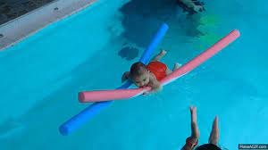

La natación es un deporte que consiste en el desplazamiento de una persona en el agua, sin que esta toque el suelo.2 Es regulado por la Federación Internacional de Natación.
La historia de la natación se remonta a la Prehistoria; se han descubierto pinturas sobre natación de la Edad de Piedra de hace 7500 años y las primeras referencias escritas datan del 2000 a. C. -Entre los egipcios, cuyo país, cortado por todas partes por infinidad de canales, ofrecía a cada paso miles de riesgos a cuantos no se habían familiarizado aún con las aguas; debido a esto, el arte de nadar se transformó en uno de los aspectos más esenciales de la educación pública. -De los japoneses se dice que ya en tiempos del emperador Sugiu (38 a. C.) se celebraba anualmente competiciones deportivas entre ellas la de natación. -Entre los antiguos griegos, la natación era tan popular que para indicar que alguien era lo que hoy llamamos un analfabeto, se decía despectivamente de él:"no sabe ni leer ni nadar".
Y vemos que Platón (355 a. C.) en su capítulo Leyes (LLL, 689) dice: "¿debería confiarse un cargo oficial a personas que son lo contrario de gente culta, los cuales no saben nadar ni leer?". -Sin embargo, la natación como deporte comenzó a principios del Siglo XIX en Gran Bretaña, con la National Swimming Society de Londres, fundada en 1837.1 El primer campeón mundial fue Tom Morris, quien ganó una carrera de una milla en el Támesis en 1869. Hacia finales del siglo XIX la natación de competición se estaba estableciendo también en Australia y Nueva Zelanda, además, varios países europeos habían creado ya federaciones. En los Estados Unidos los clubes de aficionados empezaron a celebrar competiciones en el año 1870.
La natación pasó a ser parte de los primeros Juegos Olímpicos modernos de 1896 en Atenas en el caso de los hombres, y a partir de los de 1912 para las mujeres. - 1908 el estilo trudgen fue mejorado por Richard Cavill usando la patada continua. Ese mismo año se creó la FINA: Federación Internacional de Natación. El estilo mariposa fue desarrollado en un principio como una variante del estilo braza, hasta que fue aceptado como estilo en 1952. -La natación es el arte de sostenerse y avanzar, usando los brazos y las piernas, sobre o bajo el agua. Puede realizarse como actividad lúdica o como deporte de competición. Debido a que los seres humanos no nadan instintivamente, la natación es una habilidad que debe ser aprendida. A diferencia de otros animales terrestres que se dan impulso en el agua, en lo que constituye en esencia una forma de caminar, el ser humano ha tenido que desarrollar una serie de brazadas y movimientos corporales que le impulsan en el agua con potencia y velocidad. En estos movimientos y estilos se basa la evolución de la natación competitiva como deporte.

-La natación puede practicarse en cualquier tipo de recinto de agua lo bastante grande como para permitir el libre movimiento y que no esté demasiado caliente o turbulenta. Las corrientes y mareas pueden resultar peligrosas, pero también representan un desafío para demostrar la fuerza y el valor de los nadadores, como se puede comprobar con los muchos intentos con éxito de cruzar el Canal de la Mancha. -La natación fue un deporte muy estimado en las antiguas civilizaciones de Grecia y Roma, sobre todo como método de entrenamiento para los guerreros. En Japón ya se celebraban competiciones en el siglo I a.C. No obstante, durante la Edad Media en Europa su práctica quedó casi olvidada, ya que la inmersión en agua se asociaba con las constantes enfermedades epidémicas de la época.
Hacia el siglo XIX desapareció este prejuicio y, ya en el XX, la natación se ha llegado a considerar un sistema valioso de terapia física y la forma de ejercicio físico general más beneficiosa que existe. Ningún otro ejercicio utiliza tantos músculos del cuerpo y de modo tan intenso. Además, la mayor afluencia de nadadores, así como las mejores técnicas de construcción y calefacción, han aumentado enormemente el número de piscinas públicas al aire libre y cubiertas en todo el mundo. La piscina privada, que fue en un tiempo digno de excepcional privilegio, es cada vez más común.
La natación de competición se hizo popular en el siglo XIX. El objetivo de la natación competitiva es la de romper las marcas personales o los récords mundiales. Cuando se nada debe haber la menor resistencia al agua con el fin de obtener la máxima velocidad. Sin embargo, algunos nadadores profesionales que no poseen una clasificación nacional o mundial son considerados los mejores en lo que se refiere a sus habilidades técnicas. Típicamente, un nadador profesional pasa por un ciclo de formación en la que el cuerpo está sobrecargado con el trabajo al principio, luego la carga de trabajo se disminuye en la etapa final. La práctica de reducir el ejercicio unos días antes de una competición importante se llama convergente.
Una etapa final se refiere a menudo como "afeitarse y disminuir". El nadador se afeita todos los cabellos expuestos en aras de la reducción de la resistencia y que tenga una presentación elegante y más hidrodinámica en el agua. Además, el método de "afeitar y la conicidad" se refiere a la eliminación de la capa superior de "piel muerta", que expone la piel más nueva y más rica debajo. La natación es un evento en los Juegos Olímpicos de verano, donde los atletas masculinos y femeninos compiten en diferentes estilos. Los eventos olímpicos se llevan a cabo en una piscina de 50 metros. Hay cuarenta eventos oficialmente reconocidos de natación; sin embargo, el Comité Olímpico Internacional solo reconoce 32 de ellos. El organismo rector internacional para la natación competitiva es la Federación Internacional de Natación, más conocida como la FINA.
